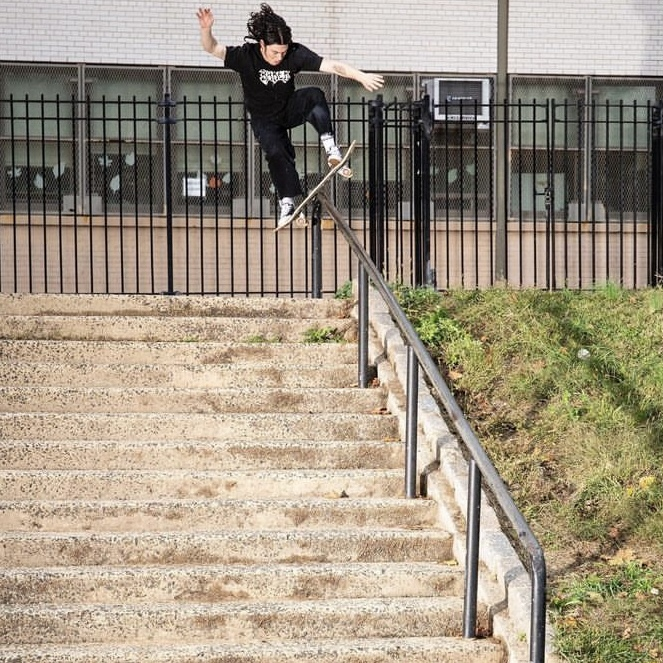
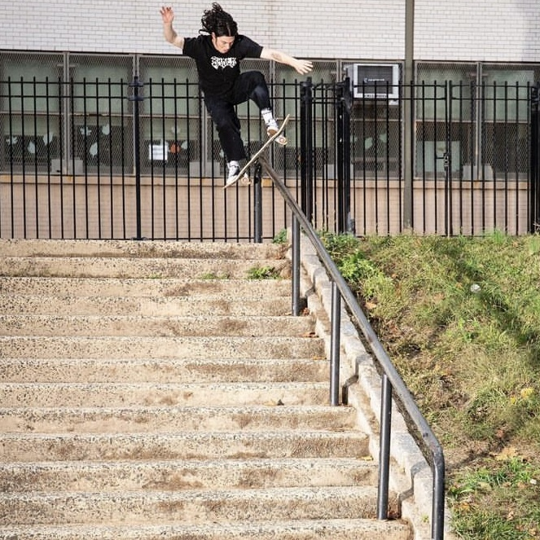

Tristan Funkhouser, also known as T-Funk, absolutely crushed it this year. He is by far one of the funnest
skaters to watch.
T-Funk charges full speed at every spot and somehow seems to ride away from everything. He is the definition
of controlled chaos.
T-Funk put out a brain melting part for Baker Skateboards in April of this year.
The part features him powering through crusty spots of the Bay Area as if he was on freshly paved cement.
 
